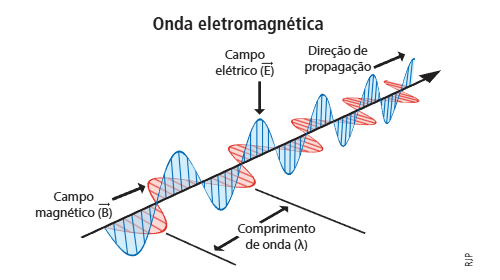
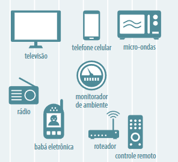

Ondas eletromagnéticas - conceitos e aplicabilidade no dia a dia

Ondas de Rádio
Onda de baixa frequência, entre 300 giga-hertz. Ondas de rádio são mais utilizadas para sistemas de navegação e comunicação

Micro-ondas
Microondas são ondas eletromagnéticas, de alta freqüência, do mesmo tipo das ondas de rádio, muito curtas, no entanto. Possui frequência de até 1011 Hz.
Infravermelho
Os raios infravermelhos são ondas eletromagnéticas com freqüências desde 1011 Hz até 1014 Hz, aproximadamente. Recebem esta nomenclatura, pois têm freqüência abaixo da correspondente à cor vermelha.
Espectro visível
É a porção do espectro eletromagnético cuja radiação pode ser captada pela visão humana.
Ultravioleta
Os raios ultravioleta são ondas eletromagnéticas com freqüências que alcançam até 1018 Hz. Esta denominação é devido a sua freqüência ser acima do violeta da luz visível.
Raios-X
Os raios X são considerados uma forma de radiação eletromagnética que possui uma alta energia e frequência, permitindo sua penetração na matéria de forma eficaz.
Raios Gama
Raios gama são um tipo de radiação eletromagnética que resulta de uma redistribuição das cargas elétricas em um núcleo.
O que são ondas?
Ondas são todo tipo de vibração ou oscilação num determinado tempo e espaço.

O que são ondas eletromagnéticas
Ondas eletromagnéticas são ondas que não precisam de um meio para se propagar. Por ter dois campos, o magnético e o elétrico, essa onda se diferencia das ondas mecânicas com a capacidade de se regenerar. Dessa forma, no vácuo essas ondas caminham sem dificuldades porque o campo magnético regenera o campo elétrico e vice e versa.
Exemplos e aplicabilidade das ondas no cotidiano
Alguns exemplos são as ondas do micro-ondas, ondas de rádio, infravermelho, luz visível e ondas ionizantes como ultravioleta, raio X e raio gama.
No cotidiano, as ondas eletromagnéticas estão presentes em rádios, exames de Raio-X, micro-ondas e Wi-fi.
